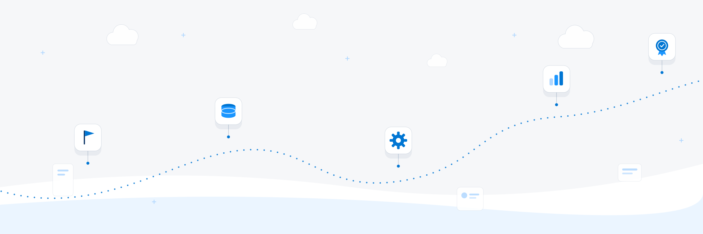

Filter by track — each course states its level, length and what you can do afterwards.
The platform's own language, from zero to first deploy.

Users, profiles, permission sets — run the org with confidence.
Declarative automation from a blank canvas to approvals.
Triggers that survive the 200-record data load.
Relationships, rollups and the schema the next admin understands.
Components the platform way — wire, LDS, events.